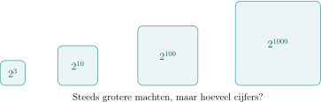
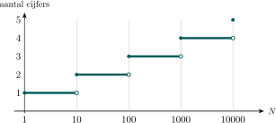

Hoeveel cijfers heeft een gigantisch getal?

Leerplandoelstellingen (GO! Navigator)
Basisvorming (BV3_06)
-
• BV3_06.01 (MD 06.01) De leerlingen rekenen met reële getallen.
-
– afbakening: machten met rationale exponent, n-de machtswortels en logaritmen met willekeurig grondtal met inbegrip van rekenregels en eigenschappen met symbolen
-
Didactische uitwerking: ontdekkend werken zonder voorkennis van logaritmen; verondersteld zijn rekenen met gehele machten, ongelijkheden en de functie \(10^x\) als stijgend verband; ongeveer twee lesuren, het optionele onderdeel als verdieping
Extra uitleg: aantal cijfers van een natuurlijk getal, tiendelige logaritme, gehele deel \(\lfloor x\rfloor \), logaritme van een macht, eerste cijfer van een groot getal
I Een gigantisch getal
1 De hoofdvraag
Hoeveel cijfers heeft \(2^{1000}\)? Je rekentoestel toont bij dit getal een foutmelding of een wetenschappelijke notatie. Het volledige getal uitschrijven is onbegonnen werk.
Toch kunnen we precies bewijzen hoeveel cijfers het getal heeft, zonder het uit te rekenen. Daarvoor hebben we een nieuw hulpmiddel nodig: de logaritme. We ontdekken het stap voor stap.
II Waar komt er een cijfer bij?
1 Eerst kijken
We beginnen zonder rekentoestel. Tel het aantal cijfers van elk getal.
| Getal | \(9\) | \(10\) | \(99\) | \(100\) | \(999\) | \(1000\) |
| Cijfers | 1 | 2 | 2 | 3 | 3 | 4 |
Er komt telkens een cijfer bij bij \(10\), \(100\) en \(1000\). Dat zijn de machten van \(10\): \(10^1\), \(10^2\) en \(10^3\). De kleinste getallen met \(2\), \(3\), \(4\) en \(5\) cijfers zijn dus
\[ \opl [1.5cm]{10},\quad \opl [1.5cm]{100},\quad \opl [1.5cm]{1000} \quad \text {en}\quad \opl [1.5cm]{10000}. \]
Op deze getallenas liggen de machten van \(10\) op gelijke afstand. Dat is een logaritmische schaal: elke stap naar rechts is een factor \(10\).
2 De algemene grens
Een getal \(N\) met vier cijfers ligt tussen de kleinste getallen met vier en met vijf cijfers:
\[ \opl [1.5cm]{1000}\le N<\opl [1.5cm]{10000}. \]
Met machten van \(10\) geschreven heeft een getal met precies vijf cijfers
\[ \opl [1.5cm]{10^4}\le N<\opl [1.5cm]{10^5}. \]
Zo komen we tot de algemene grens. Een positief geheel getal \(N\) heeft precies \(d\) cijfers als
\[ \boxed {10^{d-1}\le N<10^d}. \]
Waarom staat er links \(\le \) en rechts \(<\)?
Het getal \(10^{d-1}\) is het kleinste getal met \(d\) cijfers. Het hoort er dus bij. Het getal \(10^d\) is het kleinste getal met \(d+1\) cijfers. Het hoort er niet meer bij.
III Welke macht van 10 is dit?
1 De onbekende exponent
We weten dat \(10^2=100\). We keren de vraag nu om: tot welke macht moeten we \(10\) verheffen om een gegeven getal te krijgen? Zonder rekentoestel vinden we
\[ 10^x=1000 \iff x=\opl [1.5cm]{3} \qquad \text {en}\qquad 10^x=1 \iff x=\opl [1.5cm]{0}. \]
Bij \(10^x=50\) lukt dat niet meer zo vlot. Omdat \(50\) tussen \(10\) en \(100\) ligt, en \(10^x\) stijgend is, weten we wel
\(\seteqnumber{0}{}{0}\)\begin{align*} 10&<50<100\\ 10^1&<10^x<10^2\\ \opl [1.5cm]{1}&<x<\opl [1.5cm]{2}. \end{align*} Is \(x\) kleiner of groter dan \(1.5\)? Daarvoor rekenen we eerst \(10^{1.5}\) uit. Omdat \(1.5=\dfrac {3}{2}\), is
\(\seteqnumber{0}{}{0}\)\begin{align*} 10^{1.5}&=10^{\frac {3}{2}}\\ &=\sqrt {10^3}\\ &=\sqrt {1000}\\ &\approx \sqrt {1024}\\ &=\sqrt {2^{10}}\\ &=2^5\\ &=32. \end{align*} Ligt \(50\) links of rechts van \(32\)?
\(x>1.5\)
\(1.5\) ligt midden tussen \(1\) en \(2\), maar \(10^{1.5}\approx 32\) ligt niet midden tussen \(10\) en \(100\). Het midden van \(10\) en \(100\) is \(55\).
2 Definitie
Het antwoord op de vraag \(10^x=a\) krijgt een eigen naam: de tiendelige logaritme van \(a\). Voor \(a>0\) is
\[ \boxed {10^x=a \iff x=\log _{10}(a)}. \]
Een logaritme is dus een exponent. Bijvoorbeeld: \(10^3=1000\) betekent \(\log _{10}(1000)=3\).
Op de TI-84 geeft de toets LOG de tiendelige logaritme. Ook in Logaritmische functies schrijven we kort \(\log x\). Hier schrijven we steeds \(\log _{10}\), zodat het grondtal \(10\) zichtbaar blijft.
3 Oefeningen
Oefening 1
Probeer de toets LOG uit.
-
(a) Bereken \(\log _{10}(100)\), \(\log _{10}(10)\) en \(\log _{10}(1)\).
\(2\), \(1\) en \(0\)
\(\seteqnumber{0}{}{0}\)\begin{align*} \log _{10}(100)&=\log _{10}(10^2)=2\\ \log _{10}(10)&=\log _{10}(10^1)=1\\ \log _{10}(1)&=\log _{10}(10^0)=0 \end{align*}
-
(b) Bereken \(\log _{10}(50)\) tot op drie decimalen en vergelijk met de schatting hierboven.
\(\log _{10}(50)\approx 1.699\)
\(\seteqnumber{0}{}{0}\)\begin{align*} \log _{10}(50)&\approx 1.699 \end{align*} Dat ligt tussen \(1\) en \(2\) en is groter dan \(1.5\), zoals we voorspelden.
-
(c) Bereken zonder rekentoestel \(10^{\log _{10}(7)}\). Geef \(\log _{10}(7)\) eerst een naam, bijvoorbeeld \(x\), en gebruik de definitie.
\(10^{\log _{10}(7)}=7\) We noemen \(x=\log _{10}(7)\). Volgens de definitie betekent dat
\(\seteqnumber{0}{}{0}\)\begin{align*} 10^x&=7. \end{align*} \(\log _{10}(7)\) is dus de exponent waarmee \(10\) het getal \(7\) geeft. Vullen we die exponent in, dan krijgen we
\(\seteqnumber{0}{}{0}\)\begin{align*} 10^{\log _{10}(7)}&=10^x\\ &=7 \end{align*}
-
(d) Bereken zonder rekentoestel \(\log _{10}(10^6)\). Tot welke macht moet je \(10\) verheffen om \(10^6\) te krijgen?
\(\log _{10}(10^6)=6\) We noemen \(x=\log _{10}(10^6)\). Volgens de definitie betekent dat
\(\seteqnumber{0}{}{0}\)\begin{align*} 10^x&=10^6. \end{align*} Twee gelijke machten van \(10\) hebben dezelfde exponent, dus \(x=6\):
\(\seteqnumber{0}{}{0}\)\begin{align*} \log _{10}(10^6)&=6 \end{align*}
-
(e) Waarom bestaat \(\log _{10}(0)\) niet als reëel getal? Kan een macht van \(10\) ooit \(0\) worden?
We zoeken \(x\) met \(10^x=0\). Maar \(10^x>0\) voor elke reële \(x\), dus
\[ 10^x=0\ \lightning \]
Deze vergelijking heeft geen oplossing, en \(\log _{10}(0)\) bestaat niet.
IV Een formule voor het aantal cijfers
1 De grens vertalen
Een positief geheel getal \(N\) met \(d\) cijfers voldoet aan
\[ 10^{d-1}\le N<10^d. \]
De functie \(10^x\) is strikt stijgend. Daarom blijft de richting van de ongelijkheden behouden wanneer we overal de logaritme nemen.
We proberen het eerst met een getal \(N\) van vier cijfers. Bij elke stap schrijven we de drie delen opnieuw:
\(\seteqnumber{0}{}{0}\)\begin{align*} 1000&\le N<10000\\ 10^3&\le N<10^4\\ \log _{10}(10^3)&\le \log _{10}(N)<\log _{10}(10^4)\\ 3&\le \log _{10}(N)<4 \end{align*} In de laatste stap gebruiken we wat we in de oefeningen zagen: de logaritme van een macht van \(10\) is de exponent, zoals \(\log _{10}(10^6)=6\).
Voor een getal met \(d\) cijfers gaat het precies zo:
\(\seteqnumber{0}{}{0}\)\begin{align*} 10^{d-1}&\le N<10^d\\ \log _{10}(10^{d-1})&\le \log _{10}(N)<\log _{10}(10^d)\\ \opl [1.5cm]{d-1}&\le \log _{10}(N)<\opl [1.5cm]{d} \end{align*} De logaritme van \(N\) ligt dus tussen twee opeenvolgende gehele getallen. Bij vier cijfers is dat tussen \(3\) en \(4\).
2 Het gehele deel
Ligt een getal \(x\) tussen twee opeenvolgende gehele getallen, zoals \(3\le x<4\), dan noemen we het kleinste daarvan het gehele deel van \(x\). We schrijven \(\lfloor x\rfloor =3\). Zo is
\[ \lfloor 2.9\rfloor =\opl [1cm]{2} \qquad \text {en}\qquad \lfloor 4\rfloor =\opl [1cm]{4}. \]
Het gehele deel is niet hetzelfde als afronden: \(\lfloor 3.9\rfloor =3\), niet \(4\).
3 Stelling
Uit \(d-1\le \log _{10}(N)<d\) volgt \(\lfloor \log _{10}(N)\rfloor =d-1\). Voor het aantal cijfers \(d\) van een positief geheel getal \(N\) geldt dus
\[ \boxed {d=\lfloor \log _{10}(N)\rfloor +1}. \]

De grafiek springt telkens één hoger wanneer \(N\) een macht van \(10\) bereikt. De horizontale as is weer logaritmisch: gelijke afstanden betekenen telkens een factor \(10\).
4 Let op bij een macht van 10
Het getal \(1000\) heeft vier cijfers, terwijl \(\log _{10}(1000)=3\). Een macht van \(10\) is het eerste getal van een nieuw interval. Daarom is de \(+1\) in de formule onmisbaar:
\[ d(1000)=\lfloor 3\rfloor +1=4. \]
De formule geldt enkel voor positieve gehele getallen. Het getal \(0\) heeft ook één cijfer, maar \(\log _{10}(0)\) bestaat niet.
5 Oefeningen
Oefening 2
Bereken met de formule het aantal cijfers. Schrijf telkens de volledige berekening, met het gehele deel.
-
(a) \(9\)
\(1\) cijfer
\(\seteqnumber{0}{}{0}\)\begin{align*} d(9)&=\lfloor \log _{10}(9)\rfloor +1\\ &=\lfloor 0.9542\ldots \rfloor +1\\ &=1 \end{align*}
-
(b) \(100\)
\(3\) cijfers
\(\seteqnumber{0}{}{0}\)\begin{align*} d(100)&=\lfloor \log _{10}(100)\rfloor +1\\ &=\lfloor 2\rfloor +1\\ &=3 \end{align*}
-
(c) \(54321\)
\(5\) cijfers
\(\seteqnumber{0}{}{0}\)\begin{align*} d(54321)&=\lfloor \log _{10}(54321)\rfloor +1\\ &=\lfloor 4.7349\ldots \rfloor +1\\ &=5 \end{align*}
V Het monster \(2^{1000}\)
1 Logaritme van een macht
Om \(\log _{10}(2^{1000})\) te vinden, hebben we een regel nodig voor de logaritme van een macht. We zoeken die eerst met getallen waarvan we de logaritme al kennen.
Neem \(100=10^2\), dus \(\log _{10}(100)=2\). Met de rekenregel \((a^m)^n=a^{m\cdot n}\) is
\(\seteqnumber{0}{}{0}\)\begin{align*} 100^3&=(10^2)^3\\ &=10^{6}, \end{align*} dus \(\log _{10}(100^3)=\opl [1cm]{6}\). Dat is \(3\cdot 2\), of \(3\cdot \log _{10}(100)\).
Hetzelfde met \(1000=10^3\):
\(\seteqnumber{0}{}{0}\)\begin{align*} 1000^4&=(10^3)^4\\ &=\opl [1.5cm]{10^{12}}, \end{align*} dus \(\log _{10}(1000^4)=\opl [1cm]{12}\). Dat is \(4\cdot 3\), of \(4\cdot \log _{10}(1000)\).
De exponent van de macht komt telkens vooraan: we vermenigvuldigen de logaritme met de exponent.
Werkt dat ook voor \(2\)? Het rekentoestel geeft \(\log _{10}(2)\approx 0.301\), dus \(2\approx 10^{0.301}\). Dan is
\(\seteqnumber{0}{}{0}\)\begin{align*} 2^3&\approx (10^{0.301})^3\\ &=10^{3\cdot 0.301}\\ &=10^{0.903}, \end{align*} dus \(\log _{10}(2^3)\approx 0.903=3\cdot \log _{10}(2)\). Controle: \(2^3=8\), en het rekentoestel geeft \(\log _{10}(8)\approx \opl [1.5cm]{0.903}\).
Dezelfde redenering werkt voor elk grondtal \(a>0\) en elke exponent \(n\). Noemen we \(u=\log _{10}(a)\), dan is \(a=10^u\) en
\(\seteqnumber{0}{}{0}\)\begin{align*} a^n&=(10^u)^n\\ &=10^{n\cdot u}, \end{align*} dus \(\log _{10}(a^n)=n\cdot u=n\log _{10}(a)\).
Eigenschap
Voor \(a>0\) geldt
\[ \boxed {\log _{10}(a^n)=n\log _{10}(a)}. \]
Dit is een van de rekenregels voor logaritmen. We hebben ze zelf afgeleid uit de rekenregels voor machten.
2 De hoofdvraag opgelost
Nu hebben we alles om de hoofdvraag te beantwoorden. Met het rekentoestel is \(\log _{10}(2)\approx 0.301030\), dus
\(\seteqnumber{0}{}{0}\)\begin{align*} d(2^{1000})&=\lfloor \log _{10}(2^{1000})\rfloor +1\\ &=\lfloor 1000\log _{10}(2)\rfloor +1\\ &=\lfloor \opl [2.5cm]{301.02999\ldots }\rfloor +1\\ &=\opl [1.5cm]{302}. \end{align*} Let op: we nemen het gehele deel en ronden niet af.
Dit is geen gok maar een bewijs. Uit \(301\le \log _{10}(2^{1000})<302\) volgt
\[ 10^{301}\le 2^{1000}<10^{302}, \]
en elk getal in dat interval heeft precies \(302\) cijfers.
Hoe nauwkeurig moet de logaritme zijn?
Een afgeronde logaritme volstaat niet altijd voor een echt bewijs. Ligt \(n\log _{10}(a)\) heel dicht bij een geheel getal, dan kan een kleine fout op de decimalen het gehele deel veranderen. Bij \(2^{1000}\) ligt \(301.02999\ldots \) ver genoeg van \(301\) en \(302\): met de decimalen van het rekentoestel is de conclusie zeker.
3 Oefeningen
Oefening 3
Bereken het exacte aantal cijfers zonder het getal uit te rekenen. Gebruik \(d=\lfloor \log _{10}(N)\rfloor +1\) samen met \(\log _{10}(a^n)=n\log _{10}(a)\).
-
(a) \(3^{500}\)
\(239\) cijfers
\(\seteqnumber{0}{}{0}\)\begin{align*} d(3^{500})&=\lfloor 500\log _{10}(3)\rfloor +1\\ &=\lfloor 238.5606\ldots \rfloor +1\\ &=239 \end{align*}
-
(b) \(5^{200}\)
\(140\) cijfers
\(\seteqnumber{0}{}{0}\)\begin{align*} d(5^{200})&=\lfloor 200\log _{10}(5)\rfloor +1\\ &=\lfloor 139.7940\ldots \rfloor +1\\ &=140 \end{align*}
-
(c) \(10^{2026}\)
\(2027\) cijfers
\(\seteqnumber{0}{}{0}\)\begin{align*} d(10^{2026})&=\lfloor 2026\rfloor +1\\ &=2027 \end{align*}
-
(d) \(12^{80}\)
\(87\) cijfers
\(\seteqnumber{0}{}{0}\)\begin{align*} d(12^{80})&=\lfloor 80\log _{10}(12)\rfloor +1\\ &=\lfloor 86.3345\ldots \rfloor +1\\ &=87 \end{align*}
Oefening 4
Het getal \(8^{100}\) is gelijk aan \(2^{300}\). Toon aan dat je met beide schrijfwijzen hetzelfde aantal cijfers uitrekent, zonder de waarden van de logaritmen te vergelijken.
Met \(8=2^3\) is
\(\seteqnumber{0}{}{0}\)\begin{align*} 100\log _{10}(8)&=100\log _{10}(2^3)\\ &=100\cdot 3\log _{10}(2)\\ &=300\log _{10}(2). \end{align*} Beide schrijfwijzen geven dus dezelfde logaritme, en daarmee hetzelfde aantal cijfers.
VI Omgekeerd denken
1 Wanneer heeft \(2^n\) precies 100 cijfers?
We draaien de vraag om. Voor welke gehele getallen \(n\ge 0\) heeft \(2^n\) precies \(100\) cijfers? Een getal heeft precies \(100\) cijfers als
\[ \opl [1.5cm]{10^{99}}\le 2^n<\opl [1.5cm]{10^{100}}. \]
We nemen de logaritme. De richting blijft behouden, want de logaritme is stijgend:
\[ \opl [1cm]{99}\le n\log _{10}(2)<\opl [1cm]{100}. \]
Waarom mogen we nu door \(\log _{10}(2)\) delen zonder de tekens om te draaien?
Omdat \(\log _{10}(2)>0\). Bij delen door een positief getal blijven de ongelijkheidstekens behouden.
Delen door \(\log _{10}(2)\) geeft
\(\seteqnumber{0}{}{0}\)\begin{align*} \frac {99}{\log _{10}(2)}&\le n<\frac {100}{\log _{10}(2)}\\ 328.8709\ldots &\le n<332.1928\ldots \end{align*} Omdat \(n\) een geheel getal is, vinden we
\[ n\in \{\opl [5cm]{329,330,331,332}\}. \]
Bij grensvragen tellen de tekens \(<\) en \(\le \). Voor een geheel getal \(n\) betekent \(n<332.19\ldots \) hetzelfde als \(n\le 332\), en \(328.87\ldots \le n\) hetzelfde als \(n\ge 329\). We ronden niet af, we kijken welke gehele getallen in het interval liggen.
Wat verbergt de logaritme nog?
1 Het eerste cijfer
Met logaritmen kunnen we niet alleen tellen hoeveel cijfers een getal heeft. We kunnen zelfs zijn eerste cijfer bepalen. Voor \(2^{1000}\) is \(\log _{10}(2^{1000})=301.02999\ldots \). We splitsen de exponent in een geheel en een decimaal deel:
\(\seteqnumber{0}{}{0}\)\begin{align*} 2^{1000}&=10^{301.02999\ldots }\\ &=10^{301}\cdot 10^{0.02999\ldots }\\ &\approx 10^{301}\cdot 1.0715. \end{align*} Vermenigvuldigen met \(10^{301}\) verschuift enkel de komma. Het eerste cijfer van \(2^{1000}\) is dus het eerste cijfer van \(1.0715\), namelijk \(1\).
Oefening 5
Wat is het eerste cijfer van \(3^{100}\)? Schrijf \(3^{100}=10^m\cdot c\) met \(m\) geheel en \(1\le c<10\). Het eerste cijfer van \(3^{100}\) is het eerste cijfer van \(c\).
\(5\)
\(\seteqnumber{0}{}{0}\)\begin{align*} \log _{10}(3^{100})&=100\log _{10}(3)=47.7121\ldots \\ 3^{100}&=10^{47}\cdot 10^{0.7121\ldots }\\ &\approx 10^{47}\cdot 5.1538 \end{align*} Het eerste cijfer is \(5\).
2 Honderd faculteit
Het getal \(100!\) (spreek uit: honderd faculteit) is het product
\[ 100!=1\cdot 2\cdot 3\cdots 99\cdot 100. \]
Om het aantal cijfers te vinden, hebben we de logaritme van een product nodig. Stel \(a=10^u\) en \(b=10^v\), met \(a,b>0\). Waarom is \(\log _{10}(ab)=\log _{10}(a)+\log _{10}(b)\)?
\begin{align*} ab&=10^u\cdot 10^v=10^{u+v} \end{align*} Dus is \(\log _{10}(ab)=u+v=\log _{10}(a)+\log _{10}(b)\).
Herhaald toepassen geeft
\[ \log _{10}(100!)=\log _{10}(1)+\log _{10}(2)+\cdots +\log _{10}(100) \approx 157.9700. \]
Hoeveel cijfers heeft \(100!\)?
\(158\) cijfers
\(\seteqnumber{0}{}{0}\)\begin{align*} d(100!)&=\lfloor 157.9700\ldots \rfloor +1\\ &=158 \end{align*}
Let op: \(\log _{10}(ab)\) is de som van de logaritmen, niet het product \(\log _{10}(a)\log _{10}(b)\).
VII Samenvatting
1 Twee gereedschappen
Voor elk positief geheel getal \(N\) en elk \(a>0\) geldt
\[ \underbrace {d(N)=\lfloor \log _{10}(N)\rfloor +1}_{\text {aantal cijfers}} \qquad \text {en}\qquad \log _{10}(a^n)=n\log _{10}(a). \]
Een logaritme vertelt welke exponent we nodig hebben. Daardoor kunnen we de grootte van een enorm getal bestuderen zonder het uit te rekenen.
VIII Test jezelf
1 Oefeningen
Oefening 6
Leg in eigen woorden uit wat \(\log _{10}(70)\) betekent.
\(\log _{10}(70)\) is het getal \(x\) waarvoor \(10^x=70\), dus de exponent waarmee we \(10\) moeten verheffen om \(70\) te krijgen.
Oefening 7
Hoeveel cijfers heeft \(7^{300}\)? Toon de berekening.
\(254\) cijfers
\(\seteqnumber{0}{}{0}\)\begin{align*} d(7^{300})&=\lfloor 300\log _{10}(7)\rfloor +1\\ &=\lfloor 253.5294\ldots \rfloor +1\\ &=254 \end{align*}
Oefening 8
Sam beweert: “Omdat \(\log _{10}(1000)=3\), heeft \(1000\) drie cijfers.” Waarom heeft Sam ongelijk?
Het getal \(1000=10^3\) is het kleinste getal met vier cijfers. De formule geeft
\[ d(1000)=\lfloor 3\rfloor +1=4. \]
Sam vergeet de \(+1\).
Oefening 9
Geef een algemene regel voor het aantal cijfers van \(a^n\), met \(a\) en \(n\) positieve gehele getallen en \(a\ge 2\).
\(d(a^n)=\lfloor n\log _{10}(a)\rfloor +1\)
\(\seteqnumber{0}{}{0}\)\begin{align*} d(a^n)&=\lfloor \log _{10}(a^n)\rfloor +1\\ &=\lfloor n\log _{10}(a)\rfloor +1 \end{align*}